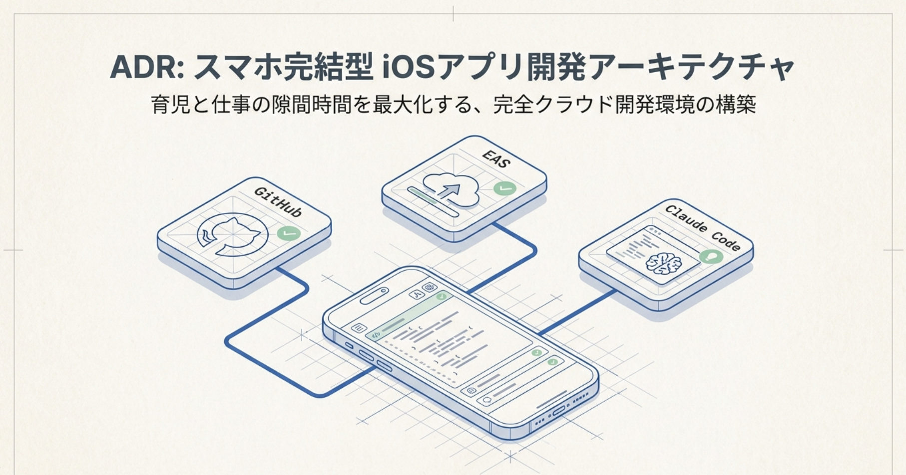
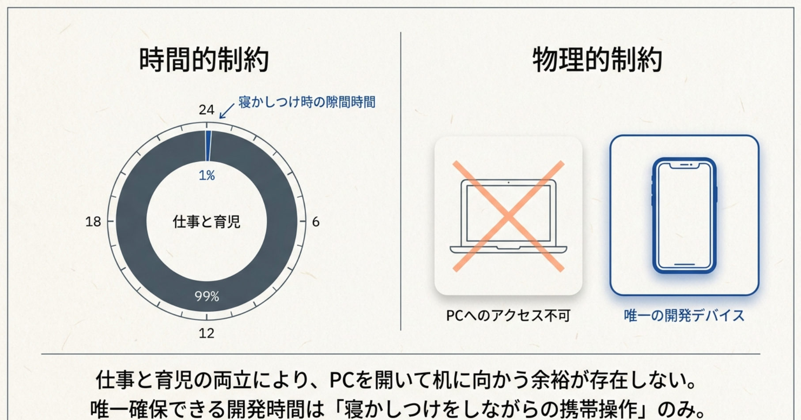
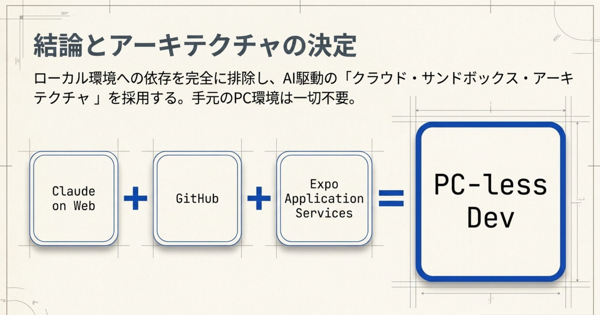
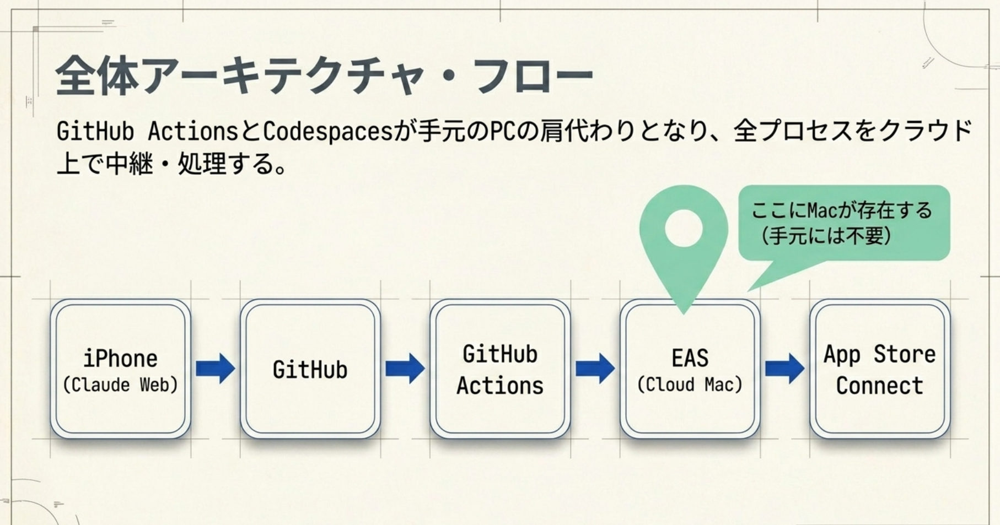
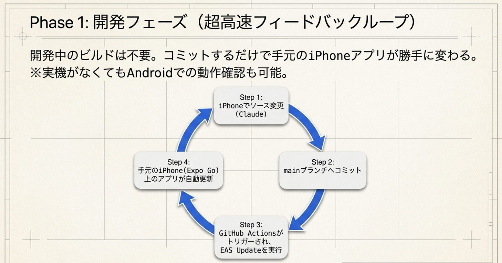
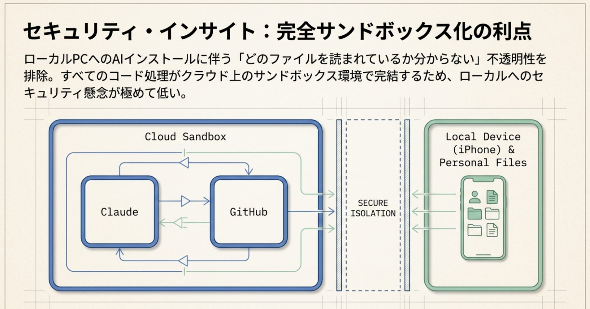
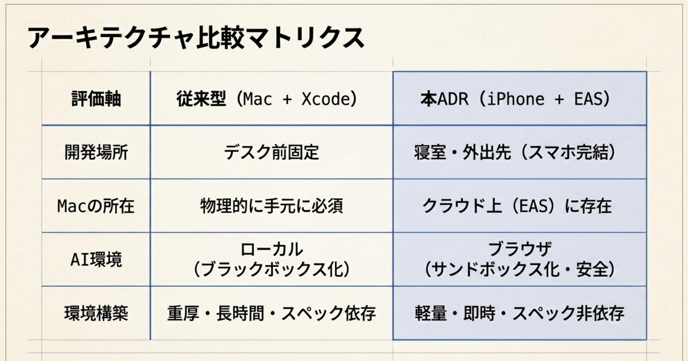

スマホ完結型 iOS アプリ開発アーキテクチャ
育児と仕事の隙間時間を最大化するために、手元から Mac も PC も無くした。それでも iOS アプリは作れる ── という意思決定の記録です。結論は「ローカル環境への依存をゼロにし、クラウドと AI に開発の本体を移す」。その理由と全体像を残しておきます。

出発点にあった制約
きれいな設計思想から入ったわけではない。先にあったのは、動かしようのない二つの制約だった。

仕事と育児を回していると、PC を開いて机に向かう時間はほぼ取れない。確実に確保できる開発時間は、子どもの寝かしつけをしながらの携帯操作くらい。しかも手元の Intel Mac はサポート切れで、重い Xcode を動かすスペックも時間もない。つまり「PC を開ける前提」がそもそも崩れていた。
旧来の開発環境が抱える3つの壁
- ハードウェアの壁 ── iOS 開発の「Mac 必須」要件が、PC を開く余裕のない環境と真っ向から衝突する。
- 開発環境の壁 ── 手持ちの Intel Mac はサポート切れ。重厚な Xcode を構築・稼働させる余力がない。
- セキュリティの壁 ── ローカル PC に AI（Claude Code 等）を入れると「どのファイルを見られているか分からない」不透明さが残る。
核心の問い
手元に Mac を置かず、セキュリティを担保したまま、iPhone だけでアプリ開発を完結できるか？
結論：クラウド・サンドボックス・アーキテクチャ
ローカルへの依存を完全に捨て、AI 駆動のクラウド・サンドボックスに開発を寄せた。手元の PC 環境は要らない。

構成要素とランニングコスト
使うものと月額は次の通り。土台は無料枠でほぼ賄える。
- AI コンテキスト：Claude Pro（$20 / 月）── Claude Code on Web を使う
- バージョン管理 & CI/CD：GitHub（無料）── Actions / Codespaces / Pages をフル活用
- ビルド基盤：EAS（Expo Application Services・無料枠）── クラウド上の Mac として動く
- 配信：Apple Developer Program（$100 / 年）── ストア公開用
全体フロー
GitHub Actions と Codespaces が手元の PC の肩代わりになり、全工程をクラウド上で中継・処理する。Mac は「クラウドの中（EAS）」にだけ存在し、手元には要らない。

Phase 1：開発フェーズ（超高速フィードバックループ）
開発中はビルドすら要らない。コミットするだけで、手元の iPhone アプリが勝手に変わる。実機が無くても Android での動作確認もできる。

Phase 2：初回ビルドだけの例外
唯一の例外が初回ビルドの証明書作成で、ここだけ対話的な Y/N 入力が要る。理屈ではスマホのブラウザでもできるが、画面サイズの都合でこの一回だけは PC ブラウザ（GitHub Codespaces）を使うのが現実的だった。
Phase 3：2回目以降は完全自動化
二回目からはスマホから GitHub Actions にコマンドを投げるだけで、アプリのビルド（EAS）・申請文の多言語化・Web ページ生成（GitHub Pages）まで一気通貫で回る。例外機材はスクリーンショット撮影に使う iPad だけ。
セキュリティ：サンドボックス化の利点
ローカルに AI を入れない構成なので、「どのファイルを読まれているか分からない」という不透明さが消える。コード処理はすべてクラウドのサンドボックス内で完結し、手元の iPhone と個人ファイルは隔離された側に残る。

従来型との比較

| 評価軸 | 従来型（Mac + Xcode） | 本構成（iPhone + EAS） |
|---|---|---|
| 開発場所 | デスク前に固定 | 寝室・外出先（スマホ完結） |
| Mac の所在 | 物理的に手元へ必須 | クラウド上（EAS）に存在 |
| AI 環境 | ローカル（ブラックボックス化） | ブラウザ（サンドボックス・安全） |
| 環境構築 | 重厚・長時間・スペック依存 | 軽量・即時・スペック非依存 |
iPhone アプリ開発に Mac は要る。でも、それが「手元」にある必要はない。
物理的・時間的な制約を、クラウドと AI で越える。手元の機材ではなく「どこに何を置くか」を組み替えただけで、隙間時間の開発が現実になった。